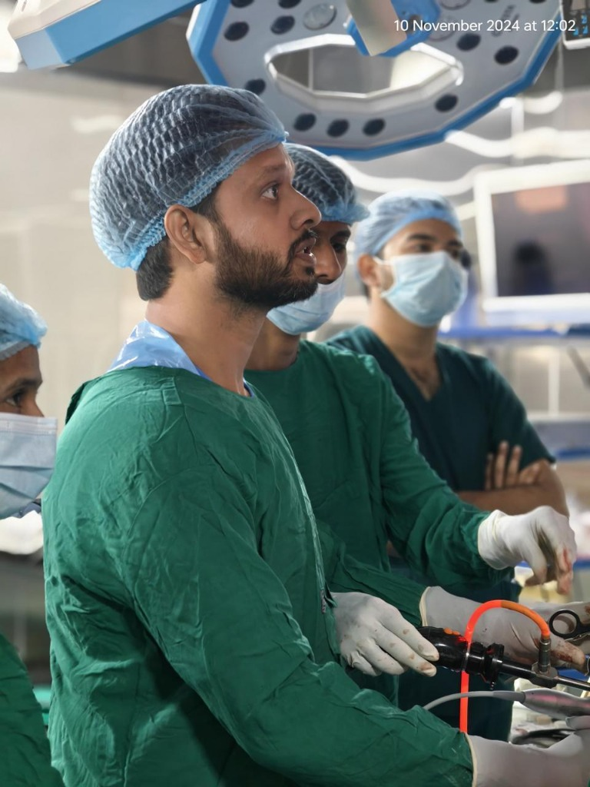
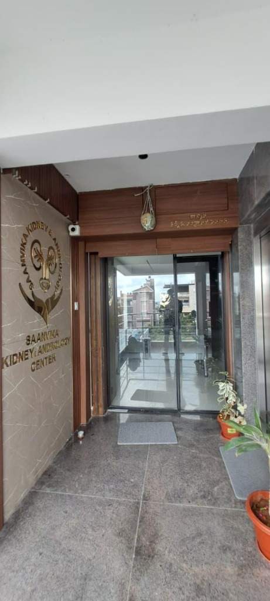
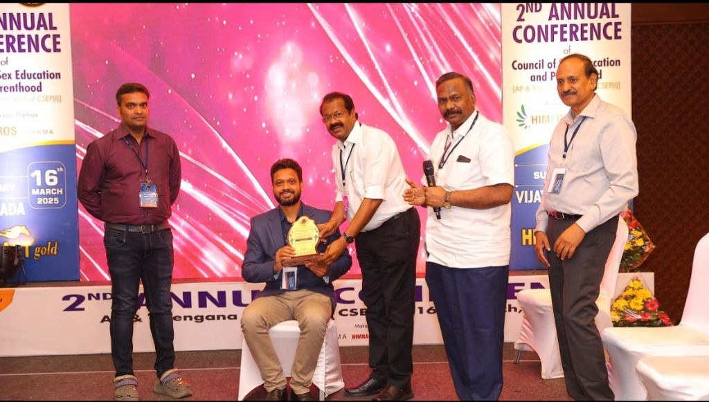
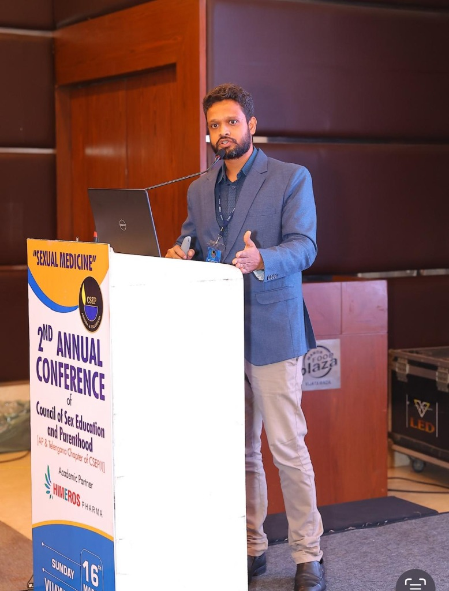

Robotic, Reconstructive Urology & Andrology Care in Hyderabad.
World-class expertise with a patient-centric approach. Advanced robotic surgery, complex reconstruction, and microsurgical andrology by Dr. Bokka Sri Harsha.
Comprehensive Urology & Andrology
Advanced diagnosis and surgical excellence across the spectrum of urological care.
Dr. Bokka Sri Harsha
A distinguished specialist treating the entire spectrum of urological disorders. Dr. Harsha combines academic excellence from top institutions like TATA Memorial Hospital and JIPMER with advanced surgical skills. His approach integrates cutting-edge technology with compassionate, patient-first care.
- Trained at JIPMER (Pondicherry) & TATA Memorial (Mumbai)
- Multiple Best Paper Awards at National Conferences
- Outcomes-focused & Affordability-conscious
Expert Insights
Understanding urological procedures and patient care.
Patient Awareness & Education
Visit YouTube Channel →Gallery




Testimonials
Consulted Dr Sri Harsha for my kidney stone treatment, Very Polite and Understanding Doctor. Listens your Problems patiently, Investigates, Treats Accordingly. Suggests the advanced Treatments Available and expert in such advanced Treatments. Have undergone a Laser Treatment for Stone. Recovered well. Thanks Dr Harsha Garu. Points to be Noted - no unnecessary tests, no dragging, no fuss - Only Discussing the Problem and effective treatment.
Forever grateful to Dr. Harsha. Dr. Harsha treated my father with so much care, patience and compassion during his surgery and recovery. From the very first day, he made us feel calm and confident. What truly touched us was how approachable and kind he was, treated my father like family. His expertise and gentle nature made a huge difference.
The best urologist Dr. Sri harsha sir has treated my son circumstances surgery. Very friendly, Felt very happy the way he explains the treatment. He is an excellent surgeon. Anyone would believe that they are in "good hands".. Highly recommended for urology surgerys.. Thank you Harsha sir.
Dr. Harsha treated me with utmost professionalism and care. The entire procedure was smooth and painless. He’s not only skilled but also very friendly and comforting throughout the treatment. Highly recommended for anyone seeking urology care!
Doctor has good knowledge and very friendly with the patient. Details are explained to the patient clearly. Issue is addressed to the satisfaction of the patient. Best wishes to Dr Sri Harsha garu
Ready to schedule your visit?
Choose the most convenient way to reach us. Appointments available for consultation.
Get in Touch
Location
3rd floor, Plot no 6, behind Aruna Diagnostics Center, beside Terrace Grill Car Parking, Srinivasa Nagar Colony, Kapra, A. S. Rao Nagar, Hyderabad, Secunderabad, Telangana 500062
Timings
Mon - Sat: 10:00 AM - 8:00 PM
Sunday by Appointment